Portfolio
8
works(制作実績)セクションの作成
カードレイアウトとバリアント機能を使って制作実績を表現する
Section 8-1
制作実績セクションの概要
worksセクションは、自身の実績を示すセクションです。 見てくれる方に、自分自身の経歴やスキルを知ってもらうためのセクションとなります。
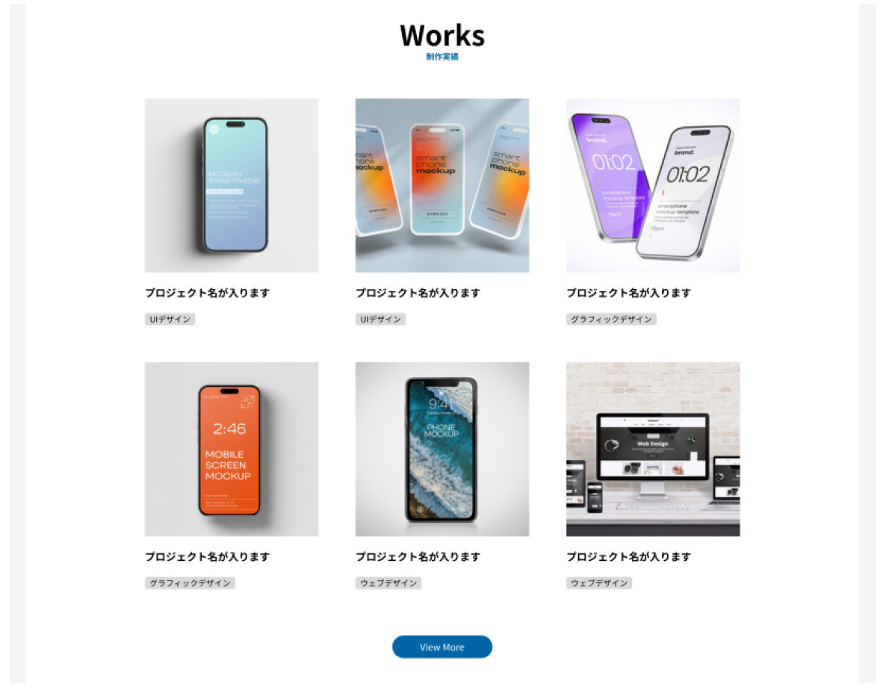
worksセクションでは、カードと呼ばれるデザインを使用します。 サンプル画像を使用しながら、Webサイトでよく使われるカードレイアウトの基本を学びます。
全体作業フロー
- タイトル文のインスタンス設置・調整
- タグコンポーネントを作成
- バリアント機能の設定
- 画像の配置と調整
- プロジェクトタイトル文の作成
- タグインスタンスの配置
- ④⑤⑥のオートレイアウト化と名称変更
- Card の複製とオートレイアウト化
- 画像の連続置換
- タグの切替
- View Moreボタンの設置
- 各要素のオートレイアウト化と微調整
① タイトル文のインスタンス設置・調整
- 左パネルの[アセット]タブから、[ title ]を選択
- ドラッグ＆ドロップで[ service ] の下、150pxのところに配置
- Alt(Option) + H (左右中央揃え) で位置を調整
- タイトル文と、その下のテキストを下記に変更
- [ Service ] → [ Works ]
- [ サービス ] → [制作実績]
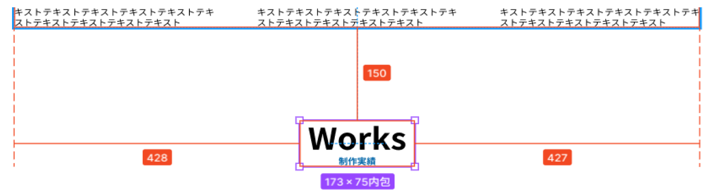
Section 8-2
worksセクションの作成
次に、制作実績のカテゴリーを示す「タグ」と呼ばれる要素を作成します。 このタグはコンポーネント化し、「バリアント機能」というfigmaの機能を使うことで、 「Webデザイン」「グラフィックデザイン」「UIデザイン」など 複数のバリエーションをまとめて管理できるようになります。
「バリアント（Variant）」は、コンポーネントをより便利に使うための機能です。 簡単に言うと、中身を自在に切り替えられるコンポーネントです。
② タグコンポーネントを作成
- [ Compornents ] ページで、テキスト[グラフィックデザイン]を作成し、スタイルを設定します。
- テキストスタイル：text / sm
- 配置：左揃え
- カラースタイル：portfolio / black
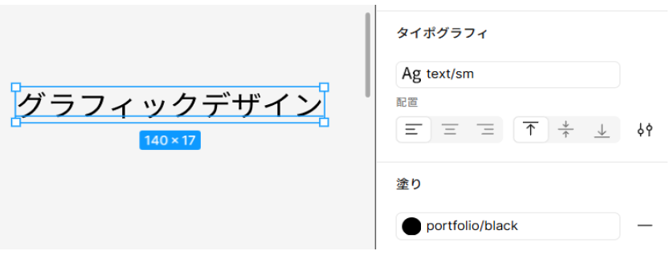
- テキストを選択し、オートレイアウト化：Shift + A
- レイヤーに新たに作成されたフレームの名称を[ tag / グラフィック ]に変更
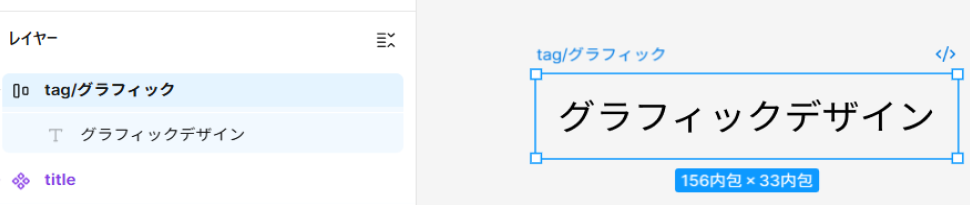
- [ tag/グラフィック]のオートレイアウトの各項目を、以下に設定
- フロー：水平
- 配置：中央揃え
- 間隔：0
- 水平パディング：8
- 垂直パディング：2
- 角の半径：4
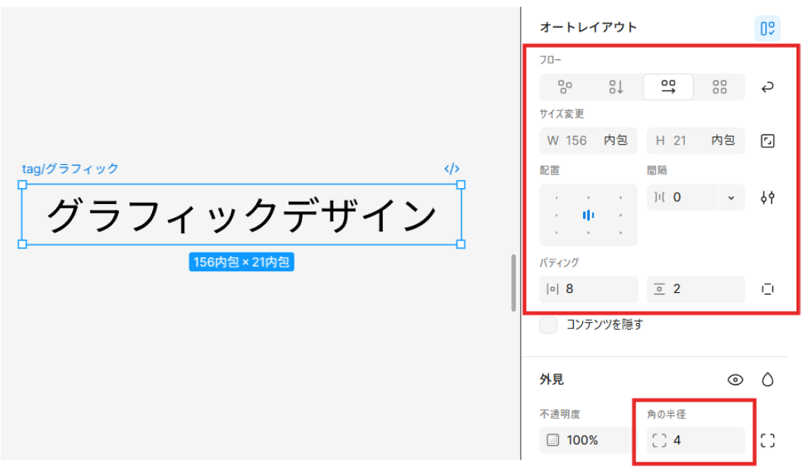
- [ tag /グラフィック] を選択し、[ 塗り ] → [ portfolio / gray ]に設定
- [ tag / グラフィック ] をコンポーネント化：Ctrl(Cmd) + Alt(Option) + K
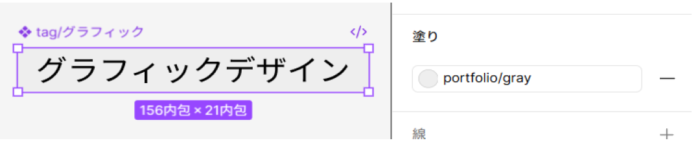
ここまではこれまで同様のコンポーネント作成です。 ここから、より機能を発展させた「バリアント」機能の設定をしていきます。
③ バリアント機能の設定
- tag/グラフィック を選択し、右パネル[ tag/グラフィ…]の右側にある[◇]をクリック（バリアントの追加）
※ バリアントの設定をすると、フレーム名が[ tag ]のみに自動的に変わります
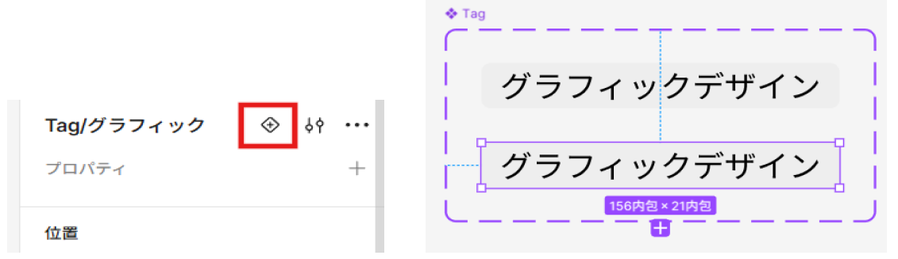
- tagを選択し、下部の[ + ]をクリック
※ これで同じテキストが3つ、縦に並びます - 3つのテキストを上から[グラフィックデザイン] [ウェブデザイン] [ UIデザイン]に変更
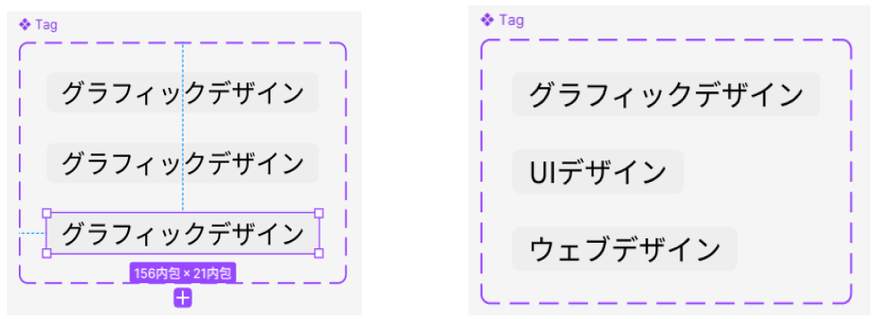
- tagを選択し、右パネル[プロパティ] → [プロパティの編集]アイコンをクリック
- [ バリアントプロパティの編集 ]の名前、値を下記に設定
- 名前：Category
- 値：グラフィックデザイン
- 値：UIデザイン
- 値：ウェブデザイン
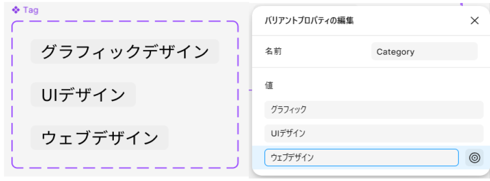
POINT
バリアントを使うと、1つのデザインコンポーネントの中で複数の状態（種類）を切り替えることができます。 これにより、タグのような「同じデザインで内容だけ異なる要素」を効率よく管理できます。 値の順番を入れ替える場合は、［バリアントプロパティの編集］パネルを開き、 値の左端をドラッグして上下に並び替えます。
④ 画像の配置と調整
- portfolio ページにて、[アセット]タブから「work6.png」 の画像を選択します。：Ctrl(Cmd) + Shift + K
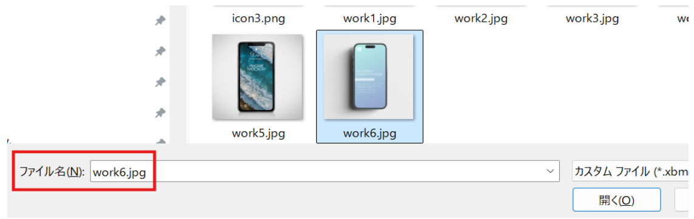
- title の下に適当に配置し、右パネル[サイズ] →[ W 300]に設定

⑤ プロジェクトタイトル文の作成
- [ Work6 1 ]の下に、テキスト[プロジェクト名が入ります]を作成し、スタイルを設定
- テキストスタイル：title / sm
- カラースタイル：portfolio / black
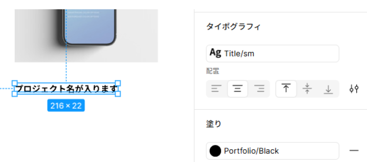
⑥ タグインスタンスの配置
- 左パネル[アセット]タブから [ tag ] を選択
- テキストの下の適当な位置に、[ドラッグ＆ドロップ]で配置
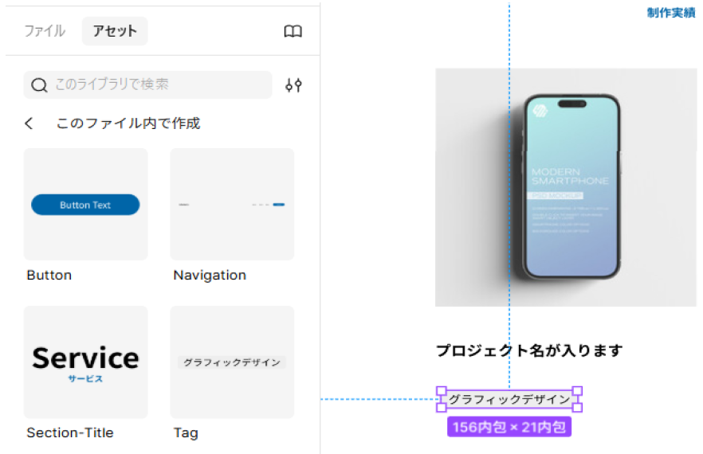
⑦ ④⑤⑥のオートレイアウト化と名称変更
- Work6, テキスト, tag の3つを選択し、オートレイアウト化：Shift + A
- レイヤーに新たに作成されたフレームの名称を[ card 1 ]に変更
※ 通常は[ card ]だけにしますが、今回は説明のために[ card 1 ]としています - card 1 のオートレイアウトの各項目を、以下に設定
- フロー：垂直
- サイズ：300
- 配置：上揃え（左）
- 間隔：24
- 各パディング：0
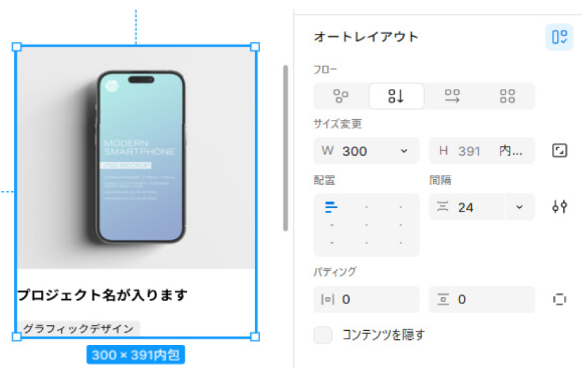
⑧ Card の複製とオートレイアウト化
- card 1 を選択し、右側に複製：Shift + Alt(Option) +ドラッグ
- そのまま4回、連続でcard 1 を複製、card 1 を全部で6個作ります：Ctrl(Cmd) + Dを4回
※ フレームからはみ出た部分は見えなくなりますが、デフォルトの挙動です
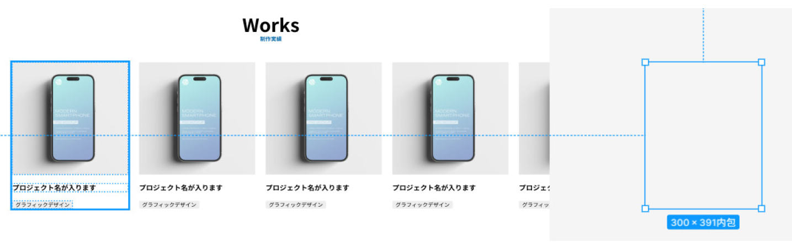
- すべてのcrad を選択し、オートレイアウト化：Shift + A
- レイヤーに新たに作成されたフレームの名称を[ worksItem ]に変更
- worksItem のオートレイアウトの各項目を、以下に設定
- フロー：水平
- 折り返し：あり
- サイズ：1028
- 配置：上揃え（左）
- 間隔：64
- 各パディング：0
- Alt(Option) + H で左右中央揃えにします。
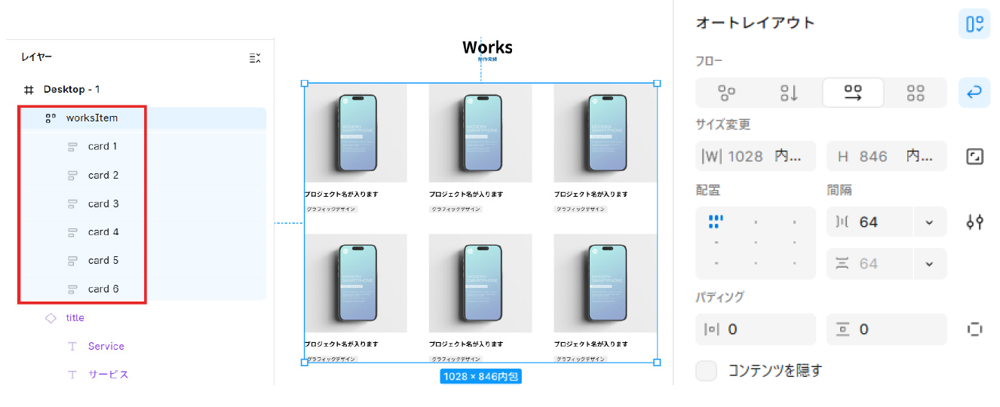
⑨ 画像の連続置換
- Work1~5の、5つの画像を選択する：Ctrl(Cmd) + Shift + K
※ Ctrl(Cmd)を押しながら 画像を選択すると、複数選択が可能です
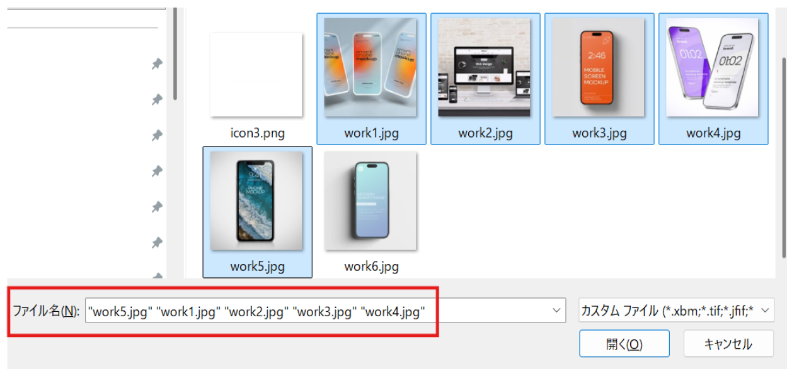
- 下記指定・画像に合わせて、連続クリックで各cardの画像を差し換え
- card1：変更なし
- card2：3つのスマホの画像（Work1）
- card3：2つのスマホの画像（Work4）
- card4：オレンジ画面のスマホの画像（Work3）
- card5：波の画面のスマホ画像（Work5）
- card6：デスクトップの画像（Work2）
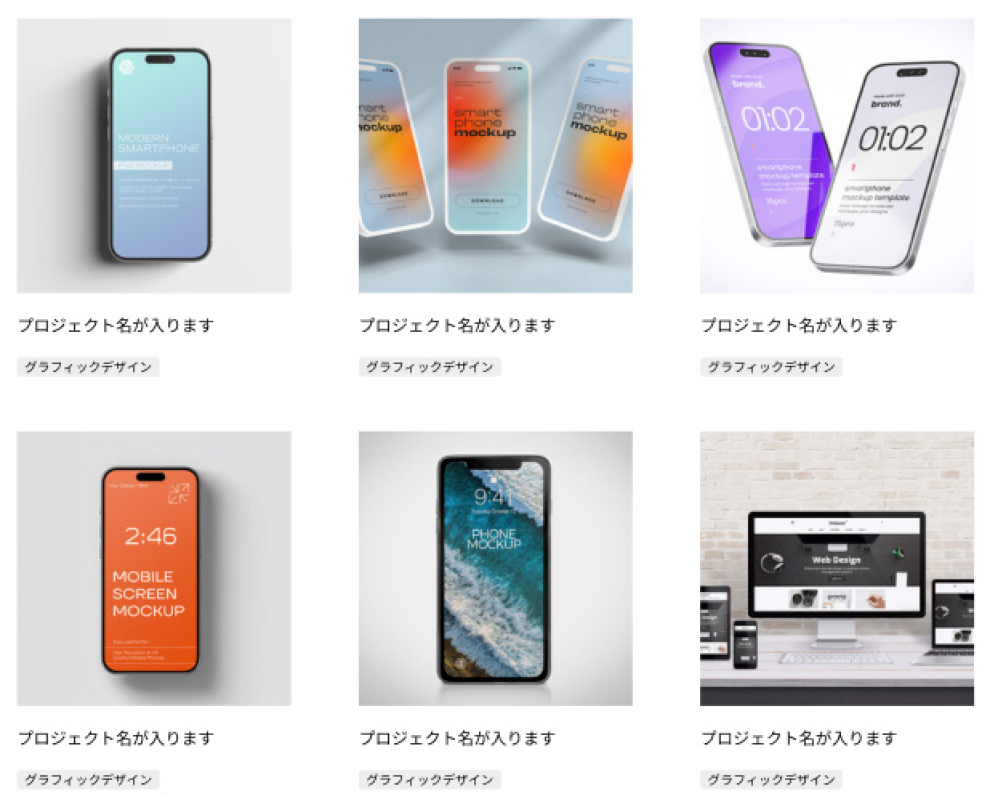
⑩ タグの切替（バリアントの変更）
- card 1の[ tag ] を選択し、右パネル [ tag ]→[ Category ]の右側、[グラフィ……∨]をクリック
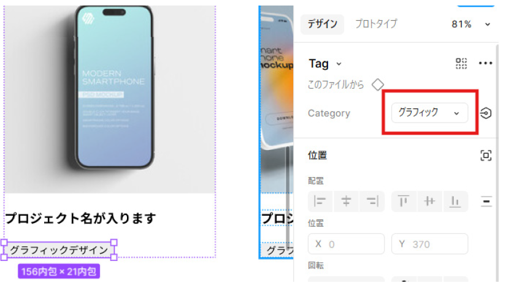
- ドロップダウンの中から[ UIデザイン ]を選択します。
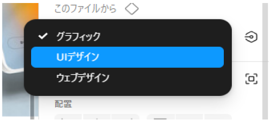
- 1~2の手順を繰り返し、Card 2~6 でも同様に変更
- Card2：UIデザイン
- Card3：グラフィックデザイン（変更なし）
- Card4：グラフィックデザイン（変更なし）
- Card5：ウェブデザイン
- Card6：ウェブデザイン
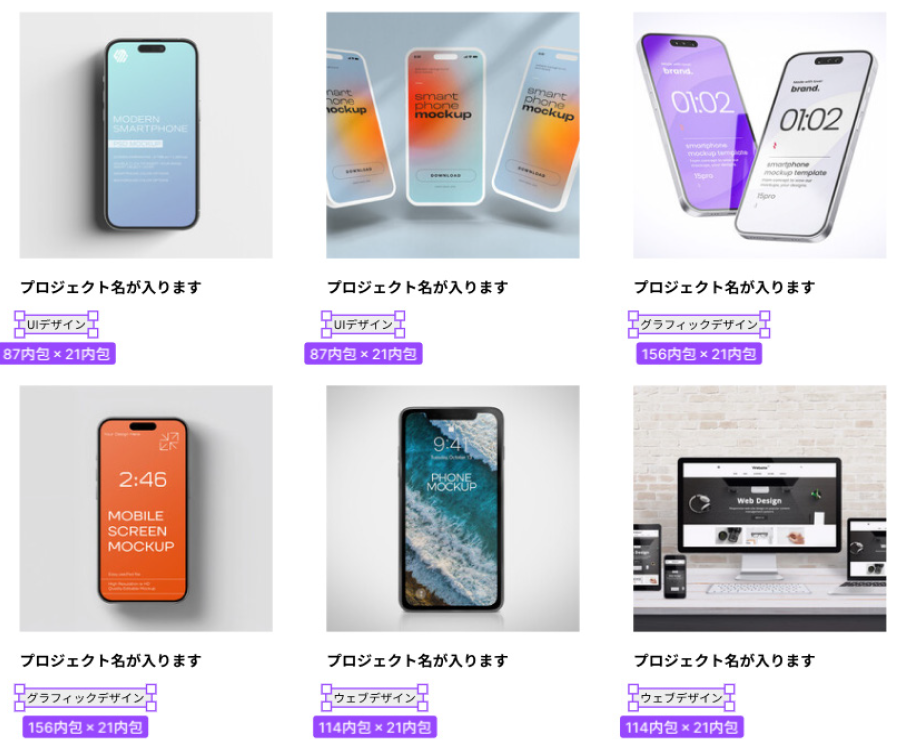
⑪ View Moreボタンの設置
- 左パネル、[アセット]タブから[ Button ] を選択
- Button インスタンスを[ worksItem ]の下、適当な位置にドラッグ＆ドロップで配置
- Button インスタンスのテキストを[ View More ]に変更
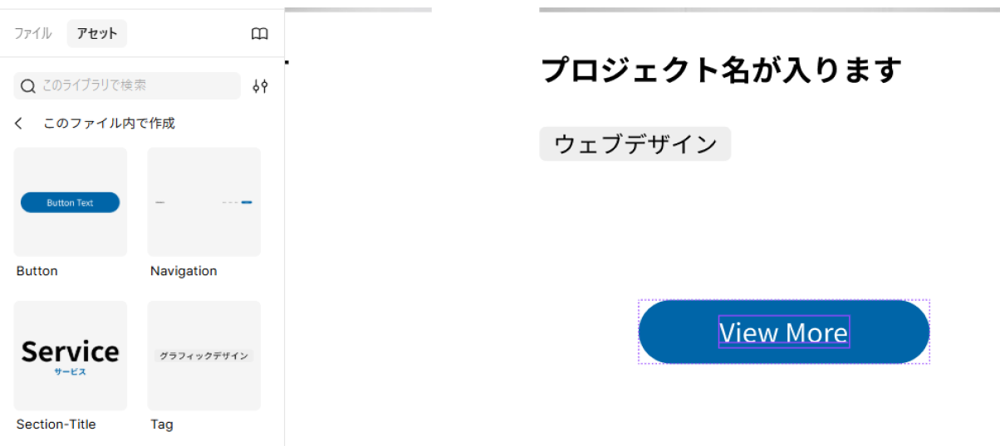
⑫ 各要素のオートレイアウト化と微調整
- [ worksItem ] [ Button ] の両方を選択し、オートレイアウト化：Shift + A
- レイヤーに新たに作成されたフレームの名称を[ worksContainer ]に変更
- worksContainer のオートレイアウトの各項目を、以下に設定
- フロー：垂直
- 配置：上揃え（中央）
- 間隔：80
- 各パディング：0
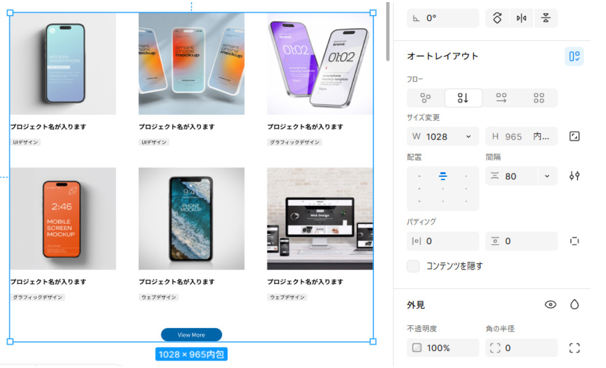
- [ worksContainer ] [ title ] の両方を選択し、オートレイアウト化：Shift + A
- レイヤーに新たに作成されたフレームの名称を[ works ]に変更
- works のオートレイアウトの各項目を、以下に設定
- フロー：垂直
- 配置：上揃え（中央）
- 間隔：64
- 各パディング：0
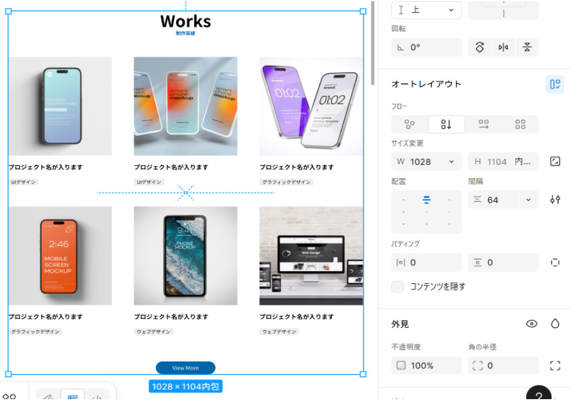
- worksを左右中央揃えにします：Alt(Option) + H
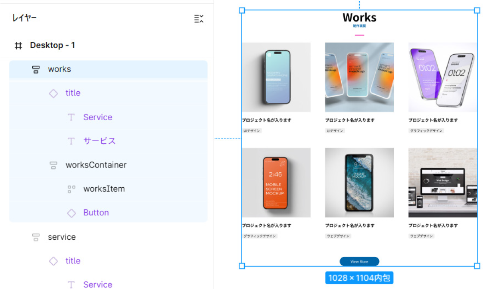
これでworksセクションが完成となります。 次は最後のコンテンツセクションの作成です。